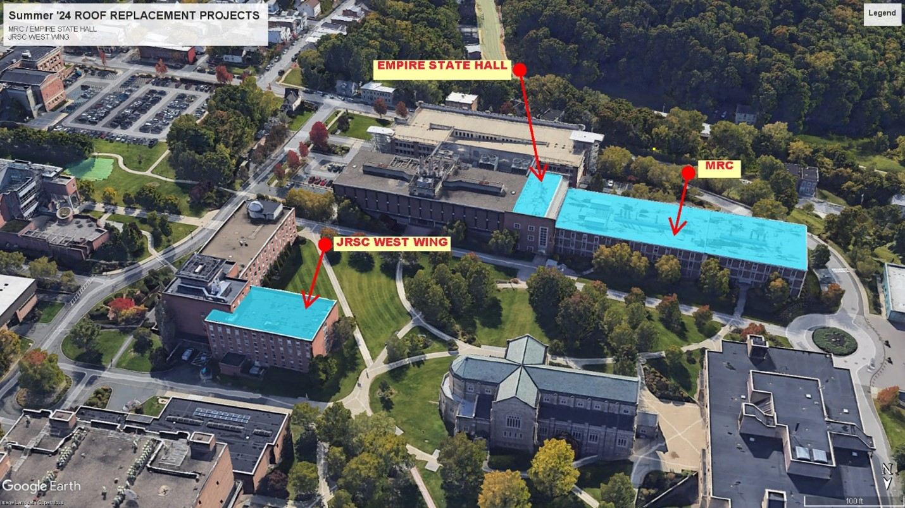

If you’re interested in joining our lab, please take a look at the details below about current openings.
Prospective Ph.D. students should submit their applications through the Computer Science Department’s Ph.D. program webpage, specifying Dr. Amiri as a potential advisor. We will carefully review your materials. If you wish to contact Dr. Amiri directly, please use the subject line “[PRSP PhD] + your current position and institution/organization” to help prioritize your email. While we make every effort to read all messages, we may not be able to respond to every one. A brief email with a clear explanation of your motivation will facilitate communication.
If you’re a master’s student (or a motivated undergraduate) at RPI and are interested in joining our research team, please don’t hesitate to contact us. When reaching out, kindly include a brief introduction outlining your background and previous experience.
We welcome inquiries from Ph.D. and master’s students who are interested in having Dr. Amiri serve on their dissertation or thesis committees. If our research interests align, Dr. Amiri would be glad to discuss these opportunities. For effective coordination, please reach out with sufficient advance notice.
We welcome inquiries from those interested in joining us as visiting scholars. Please don’t hesitate to get in touch. To facilitate a successful collaboration, it is crucial that your research interests align with those of our group.
Our lab is located at Room 332, MRC building at RPI
